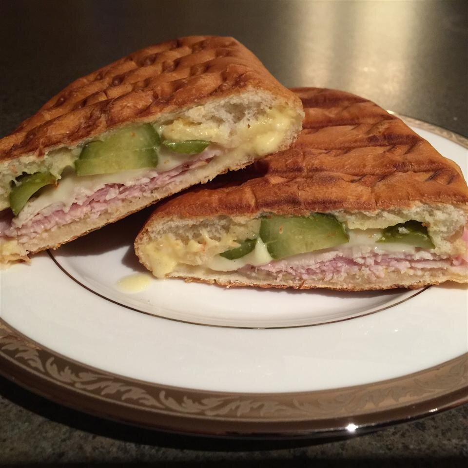

Cuban-Midnight sandwich

Description
This sandwich originated in cuba in the early 1970's.
It is served in many Cuban communities in the United States.
It is so named because of the sandwich's popularity as a staple served in Havana's night clubs right around or after midnight.
Ingredients
- 1 cup mayonnaise
- 5 tablespoons Italian dressing
- 4 hoagie rolls, split lengthwise
- 4 tablespoons prepared mustard
- 1/2 pound thinly sliced deli turkey meat
- 1/2pound thinly sliced cooked ham
- 1/2pound thinly sliced Swiss cheese
- 1 cup dill pickle slices
- 1/2cup olive oil
Steps
- step 1)In a small bowl, mix together mayonnaise and Italian dressing. Spread mixture on hoagie rolls. Spread each roll with mustard. On each roll, arrange layers of turkey, ham, and cheese. Top each with dill pickle slices. Close sandwiches, and brush tops and bottoms with olive oil.
- step 2)Heat a non-stick skillet over medium high heat. Place sandwiches in skillet. Cook sandwiches for 2 minutes, pressing down with a plate covered with aluminum foil. Flip, and cook for 2 more minutes, or until cheese is melted. Remove from heat, place on plates, and cut in half diagonally.
We hope you enjoy! we would appreciate feedback in the comment section below.